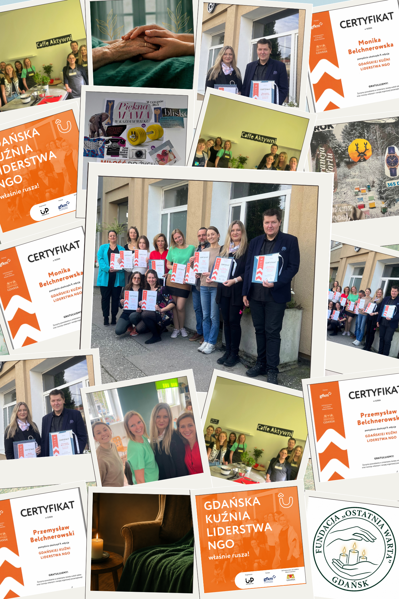

Za nami niezwykle intensywny, ale i satysfakcjonujący czas. Mamy zaszczyt poinformować, że ukończyliśmy 9 edycję Gdańskiej Kuźni Liderstwa NGO. Z tego miejsca pragniemy skierować ogromne podziękowania w stronę całej ekipy UP Foundation za wzorową organizację, profesjonalizm i stworzenie unikalnej przestrzeni do rozwoju dla trójmiejskiego trzeciego sektora.
Program obejmował 78 godzin wartościowych i merytorycznych warsztatów oraz inspirujące wizyty studyjne. Największą wartością tego przedsięwzięcia byli jednak ludzie. Poznaliśmy grono bardzo zaangażowanych i wartościowych osób – uczestników tegorocznej edycji. Wymiana doświadczeń, wspólne rozmowy i nawiązane relacje to niezwykły kapitał, który z pewnością zaowocuje jeszcze skuteczniejszymi działaniami w ramach naszej Fundacji.
Szczególne wyrazy uznania kierujemy również do Gdańskiej Fundacji Kształcenia Menedżerów (GFKM) za cenne partnerstwo merytoryczne i wsparcie całego projektu, co z dumą prezentujemy na zdobytych certyfikatach.
Wiedza z zakresu skutecznego zarządzania organizacją, strategii i liderstwa pozwala nam nieustannie podnosić standardy naszej pracy i jeszcze lepiej realizować misję niesienia pomocy osobom u kresu życia. Działamy dalej i wdrażamy zdobyte umiejętności w życie!